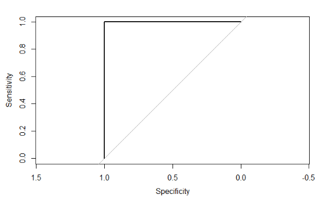
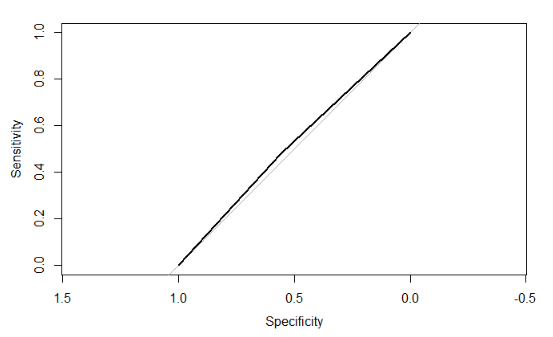

10 Classification metrics
For regression problems, when the output is a whole number, we can use the sum of squares \(\text{RSS}\), the r-squared \(R^2\), the mean absolute error \(\text{MAE}\), and the likelihood. For classification problems we need to a new set of metrics.
A confusion matrix shows is a table that summarizes how the model classifies each group.
- No claims and predicted to not have claims - True Negatives (TN) = 1,489
- Had claims and predicted to have claims - True Positives (TP) = 59
- No claims but predicted to have claims - False Positives (FP) = 22
- Had claims but predicted not to - False Negatives (FN) = 489
10.0.1 Probit, Cauchit, Cloglog
These link functions are still monotonic, so the sign of the coefficients can be interpreted to mean that the variable has a positive or negative impact on the target.
More extensive interpretation is not straightforward. In the case of the Probit, instead of dealing with the log-odds function, we have the inverse CDF of a standard Normal distribution (a.k.a., a Gaussian distribution with mean 0 and variance 1). There is no way of taking this inverse directly.
These definitions allow us to measure performance on the different groups.
Precision answers the question “out of all of the positive predictions, what percentage were correct?”
\[\text{Precision} = \frac{\text{TP}}{\text{TP} + \text{FP}}\]
Recall answers the question “out of all of positive examples in the data set, what percentage were correct?”
\[\text{Recall} = \frac{\text{TP}}{\text{TP} + \text{FN}}\]
The choice of using precision vs. recall depends on the relative cost of making an FP or an FN error. If FP errors are expensive, then use precision; if FN errors are expensive, then use recall.
Example A: the model is trying to detect a deadly disease, which only 1 out of every 1,000 patients survives without early detection. Then the goal should be to optimize recall because we would want every patient that has the disease to get detected.
Example B: the model is detecting which emails are spam or not. If an important email is flagged as spam incorrectly, the cost is 5 hours of lost productivity. In this case, precision is the main concern.
In some cases, we can compare this “cost” in actual values. For example, if a federal court is predicting if a criminal will recommit or not, they can agree that “1 out of every 20 guilty individuals going free” in exchange for “90% of those who are guilty being convicted”.
A dollar amount can be used when money is involved: flagging non-spam as spam may cost $100, whereas missing a spam email may cost $2. Then the cost-weighted accuracy is
\[\text{Cost} = (100)(\text{FN}) + (2)(\text{FP})\]
The cutoff value can be tuned in order to find the minimum cost.
Fortunately, all of this is handled in a single function called confusionMatrix.
10.1 Area Under the ROC Curve (AUC)
What if we look at both the true-positive rate (TPR) and false-positive rate (FPR) simultaneously? That is, for each value of the cutoff, we can calculate the TPR and TNR.
For example, say that we have 10 cutoff values, \(\{k_1, k_2, ..., k_{10}\}\). Then for each value of \(k\) we calculate both the true positive rates
\[\text{TPR} = \{\text{TPR}(k_1), \text{TPR}(k_2), .., \text{TPR}(k_{10})\} \]
and the true negative rates
\[\{\text{FNR} = \{\text{FNR}(k_1), \text{FNR}(k_2), .., \text{FNR}(k_{10})\}\]
Then we set x = TPR and y = FNR and graph x against y. The resulting plot is called the Receiver Operator Curve (ROC) and the the Area Under the Curve is called the AUC.
You can also think of AUC as being a probability. Unlike a conventional probability, this ranges between 0.5 and 1 instead of 0 and 1. In the Logit example, we were predicting whether or not an auto policy would file a claim. Then you can interpret the AUC as
The expected proportion of positives ranked before a uniformly drawn random negative
The probability that a model prediction for a policy that filed a claim is greater than the model prediction for a policy that did not file a claim
The expected true positive rate if the ranking is split just before a uniformly drawn random negative.
The expected proportion of negatives ranked after a uniformly drawn random positive.
The expected false positive rate if the ranking is split just after a uniformly drawn random positive.
You can save yourself time by memorizing these three scenarios:
\[ \text{AUC} = 1.0 \]

This is a perfect model that predicts the correct class for new data each time. It will have a ROC plot showing the curve approaching the top left corner so that the square area is 1.0.
\[ \text{AUC} = 0.5 \]*

When the ROC curve runs along the diagonal, then the area is 0.5. This performance is no better than randomly selecting the class for new data such that the proportions of each class match that of the data.
\[ \text{AUC} < 0.5 \] Any model having an AUC less than 0.5 means providing predictions that are worse than random selection, with a near 0 AUC indicating that the model makes the wrong classification almost every time. This can occur in two ways
The model is overfitting. For example, the AUC on the train data set may be higher than 0.8 but only 0.2 on the test data set. This indicates that you need to adjust the parameters of your model. See the chapter on the Bias-Variance Tradeoff.
There is an error in the AUC calculation or model prediction.
If we just randomly guess, the AUC would be 0.5, represented by the 45-degree line. A perfect model would maximize the curve to the upper-left corner.
The AUC of 0.76 is decent. If we had multiple models, we could compare them based on the AUC.
In general, AUC is preferred over Accuracy when there are many more “true” classes than “false” classes, which is known as having class imbalance. An example is bank fraud detection: 99.99% of bank transactions are “false” or “0” classes, and so optimizing for accuracy alone will result in a low sensitivity for detecting actual fraud.
10.2 Demo the model for interpretation
For uglier link functions, we can rely on trial-and-error to interpret the result. We will call this the “model-demo method, ” which, as the name implies, involves running example cases and seeing how the results change.
This method works not only for categorical GLMs, but any other type of models such as a continuous GLM, GBM, or random forest.
The signs of the coefficients tell if the probability of having a claim is either increasing or decreasing by each variable. For example, the likelihood of an accident
- Decreases as the age of the car increases
- Is lower for men
- Is higher for sports cars and SUVs ## Bias-Variance Tradeoff Visualization
# Simulated example (conceptual)
set.seed(42)
n <- 200
x <- runif(n, 0, 10)
y <- 3 + 2*x + sin(x) + rnorm(n, 0, 1.5)
df_sim <- tibble(x, y)
ggplot(df_sim, aes(x, y)) +
geom_point(alpha = 0.6, color = "#7dd3fc") +
geom_smooth(method = "lm", color = "#ff6b6b", se = FALSE) +
geom_smooth(method = "loess", span = 0.3, color = "#00d4ff", se = FALSE) +
labs(title = "Bias vs Variance – Linear vs Flexible Fit",
subtitle = "Predictive Insights 2026",
x = "Predictor", y = "Response") +
theme(plot.subtitle = element_text(color = "#a3bffa"))
All interpretations should be based on the model which was trained on the entire data set. This only makes a difference if you are interpreting the precise values of the coefficients. If you are just looking at which variables are included or at the size and sign of the coefficients, then this would probably not make a difference.